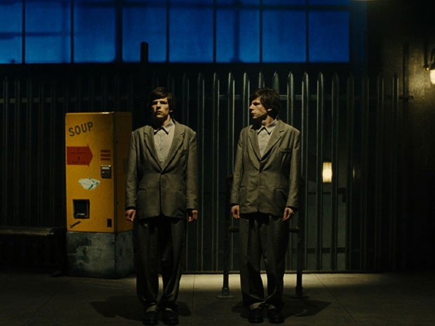

Estreia: suspense 'O duplo' explora Dostoiévski e relações de trabalho

Em “O duplo”, de Richard Ayoade, Jesse Eisenberg (“A rede social”) vive o personagem-título e sua cópia. Baseado numa novela do russo Fiódor Dostoiévski, o filme pode ter mais a ver com a alienação e repetição do trabalho do que com personalidades opostas se compensando mutuamente – na verdade, tudo isso pode estar conectado.
Simon James (Eisenberg) é um sujeito solitário que trabalha numa empresa, da qual pouco ou nada sabemos, numa cidade e tempo que também não são especificados. O visual retrô-futurista serve mais para confundir do que explicar – e isso pode ser positivo. Há um quê da distopia da adaptação cinematográfica de “1984”, dirigida por Michael Radford. Pessoas apertam botões sem saber ao certo o porquê, mas ainda assim, apertam. Ele é só mais um dos funcionários, ninguém sabe seu nome – nem o chefe, interpretado pelo veterano Wallace Shawn.
'Anna Karenina', obra-prima de Tolstoi, volta ao cinema em Toronto
O grande escritor russo Leon Tolstoi ainda desperta paixão: sua obra-prima, "Anna Karenina", que já foi levada uma dúzia de vezes ao cinema, é tema de mais uma adaptação, desta vez muito original com Keira Knightley no papel principal, apresentada no Festival de Cinema de Toronto.
É a primeira vez que esse filme de 130 minutos, dirigido pelo britânico Joe Wright (autor de "Orgulho e preconceito", em 2005, também estrelado por Keira Knightley, e "Desejo e reparação", de 2007), é apresentado no exterior. O Festival Internacional de Cinema de Toronto, que vai até 16 de setembro, é considerado como uma rampa de lançamento para o Oscar.
Versão moderna de clássico russo,
'1 Gaivota' está em cartaz em SP